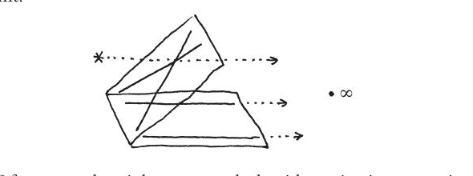
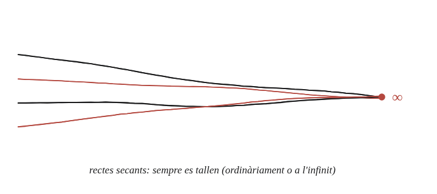

Dues línies en l'espai projectiu s'intersequen necessàriament?

Què hem de produir
Al pla ordinari, la resposta seria "no": dues rectes paral·leles en són l'única excepció, i mai es troben. La resposta aquí és sí —però cal explicar exactament quin punt "nou" fa que la vella excepció desaparegui.
El que li falta al pla ordinari
La qüestió 104 ja va donar a cada direcció del pla el seu propi punt de fuga: totes les rectes paral·leles entre si, mirades en perspectiva, convergeixen visualment cap a un mateix punt. L'espai projectiu pren aquesta idea i la fa literal —no només visual—: a cada direcció del pla se li afegeix un punt nou "a l'infinit", i totes les rectes d'aquella direcció el comparteixen.
La construcció
Diverses rectes gairebé paral·leles, convergint totes cap a un mateix punt marcat "∞" —exactament com el punt de fuga que ja apareixia a la qüestió 104, però ara tractat com un punt real del pla ampliat, no com un simple efecte de perspectiva.

Tancar-ho
Dues rectes secants es tallen, com sempre, en un punt ordinari del pla. Dues rectes paral·leles comparteixen la mateixa direcció, i per tant comparteixen també el mateix punt a l'infinit —el d'aquella direcció— i es tallen allà. En l'espai projectiu, format pel pla ordinari més un punt a l'infinit per a cada direcció, literalment cap parella de rectes deixa mai de tallar-se.
Sí: en l'espai projectiu, dues rectes qualssevol es tallen sempre. Les secants ho fan en un punt ordinari; les paral·leles, en el punt a l'infinit que comparteixen per tenir la mateixa direcció.
Comprovació
Dues rectes de pendent 3, paral·leles entre si, no es tallen mai al pla ordinari —el sistema d'equacions que en descriu la intersecció no té cap solució real. En l'espai projectiu, totes dues "arriben" al mateix punt a l'infinit associat a la direcció de pendent 3: és l'únic punt a l'infinit que comparteixen amb qualsevol tercera recta de pendent diferent, que arriba al seu propi punt a l'infinit, distint.
Val la pena, però, la lletra petita d'aquest "sempre": tot el que s'ha fet aquí passa dins d'un sol pla. A l'espai de tres dimensions, dues rectes poden no ser mai paral·leles ni tallar-se —una que va pel terra i una altra que travessa el sostre en una altra direcció, sense passar mai l'una per sobre de l'altra: se'n diu que s'encreuen. Afegir-hi punts a l'infinit no ho arregla, perquè cadascuna se'n va cap a un punt de l'infinit diferent.